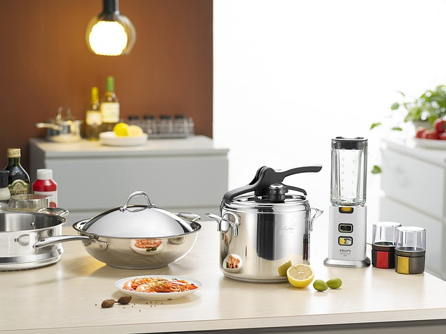

주방 청소 팁
1. 전기포트를 청소한다면 구연산을 넣고 끓이자: 구연산 한스푼만 넣고 끓이면 깔끔해진다.
2. 개수대를 청소할 때 베이킹 소다를 애용하자: 단순히 베이킹 소다를 뿌리는 것 만으로도 싱크대와 개수대를 깔끔히 만들 수 있다.
3. 1번에서 끓이고 남은 구연산 끓인 물은 싱크대 배수구에 부어버리자: 탈취, 살균 효과가 있다.
4. 시중에 파는 매직 블럭을 잘 활용하자: 물만 묻혀서 닦으면 어디든 다 깔끔해지는 마법같은 물건이다.